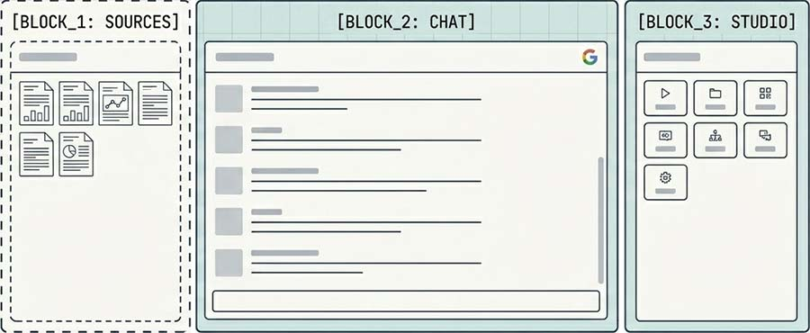
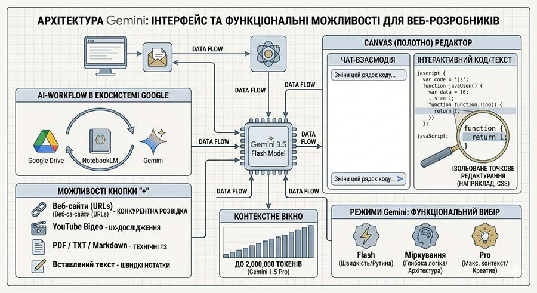
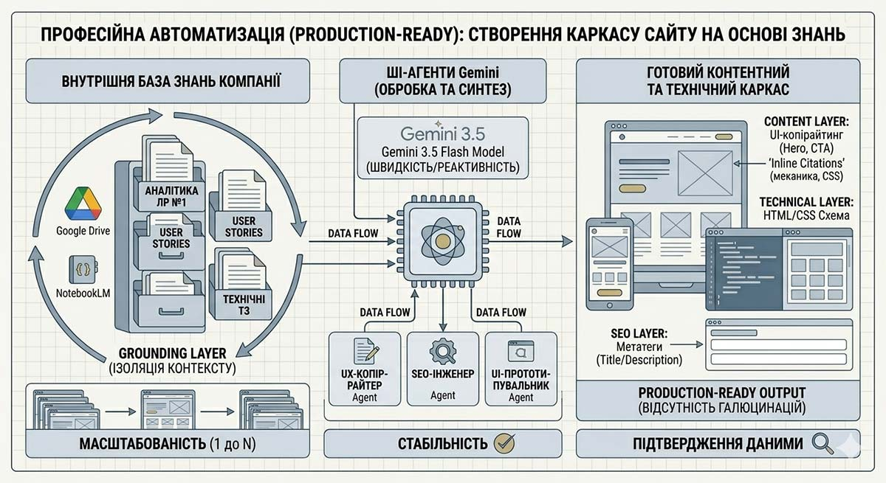

Мета роботи
Побудувати наскрізний робочий процес (workflow) аналізу інформації, структурування вихідних даних, генерації цільового текстового контенту та підготовки SEO-матеріалів для вебпроєкту за допомогою синергії хмарних ШІ-сервісів Google (NotebookLM, Gemini та Google Docs).
Стек інструментів для роботи
Поняття ШІ-робочий процес (AI-Workflow) в контексті сучасної веброзробки відображає перехід від поодиноких, хаотичних запитів до ШІ (наприклад, «напиши мені текст») до послідовних, замкнених інженерних ланцюжків, де дані вільно й без втрати контексту мігрують між різними спеціалізованими інструментами.
В екосистемі Google інструменти Google Drive, NotebookLM та Google Gemini утворюють ідеальну безшовну інфраструктуру для такого процесу. Вони надають можливість повністю вирішити проблему «галюцинацій» ШІ та обмеженості його пам'яті.
{kind=link}
{kind=link}
{kind=link}
Google Docs — «Сховище сирого контексту» (Data Layer)
Це відправна і фінальна точка для всього процесу. Тут зберігаються вихідні файли: результати аналітики з ЛР №1, текстові замітки, маркетингові дослідження, бренд-буки конкурентів чи файли специфікацій.
Google Docs в робочому процесі є надійною хмарною базою даних, яка інтегрується з іншими ШІ-інструментами Google в один клік, позбавляючи розробника необхідності постійно завантажувати й скачувати файли локально.
Google NotebookLM — «Ізольоване ядро знань» (Grounding Layer)
Найбільш недооцінений, але критично важливий інструмент для вебсегментації. NotebookLM — це персоналізована ШІ-пісочниця, яка працює виключно в межах тих документів, які в неї завантажено. Вона використовує технологію Заземлення Знань (Grounding).
В робочому процесі це ШІ-аналітик. Він «ковтає» сирі дані з Google Drive, структурує їх, знаходить суперечності, генерує резюме і допомагає розробнику вести діалог з власною базою даних без ризику, що ШІ вигадає факти з загального інтернету.
Google Gemini — «Генеративний копірайтер та SEO-інженер» (Execution Layer)
Це потужний креативний та технічний рушій. Маючи доступ до величезного вікна контексту (до 2 мільйонів токенів в сучасних моделях Gemini), цей ШІ здатний обробляти згенеровані структури, перетворюючи їх на фінальні інтерфейсні тексти та програмні теги.
В робочому процесі Gemini є виконавцем. Він бере структуровані інсайти з NotebookLM і перетворює їх на комерційні тексти, UX-блоки та готові SEO-метатеги.
Інтерфейс Google NotebookLM — це шедевр мінімалізму та функціональності. Коли початківці вперше відкривають цей інструмент, вони очікують побачити складну панель налаштувань або черговий заплутаний інтерфейс для програмістів.
На головній сторінці сервісу потрібно натиснути іконку «+» (New Notebook) і дати назву створеному блокноту. Блокноти мають бути вузькотематичними (наприклад, «Аналіз ринку ігор» або «Здоров’я»), оскільки ШІ працює краще, коли джерела є тісно пов’язаними між собою.
Розробники Google реалізували геніальну трикомпонентну архітектуру сервісу. Весь робочий простір (блокнот) розділено на три чіткі функціональні зони, які взаємодіють між собою за принципом наскрізного потоку даних.

[BLOCK 1] Джерела (Sources) — Фундамент знань
Це "база знань", куди завантажуються документи для дослідження обраної теми. NotebookLM підтримує різні способи наповнення бази знань:
- З локальної папки та скопійований текст.
- З Google Диску (Google Drive). Можна імпортувати Google Документи, Презентації та PDF-файли безпосередньо зі свого хмарного сховища. Однією з найкорисніших функцій є автоматична ресинхронізація, якщо змінити оригінальний файл на Google Диску, NotebookLM надає можливість оновити його вміст в блокноті одним кліком.
- З інтернету
- Веб-сайти. Додавання посилань (URL) на конкретні статті або сторінки.
- YouTube. Система надає можливість вставляти посилання на публічні відео, з яких ШІ автоматично витягує транскрипт (текстову версію озвучки) для подальшого аналізу.
- Копіювання тексту. Можна просто вставити скопійований фрагмент тексту або Markdown безпосередньо в блокнот.
У вікні додавання джерел доступні інструменти для автоматизованого збору інформації:
- Швидкий пошук (Fast Research). Це стандартний, швидкий режим виявлення нових джерел за ключовими словами.
- Глибоке дослідження (Deep Research). Це складніший агентний ШІ-інструмент, призначений для глибокого вивчення теми. Замість простого пошуку за словами, він автономно аналізує тему, знаходить близько 50 релевантних джерел, оцінює їхню якість і заповнює інформаційні прогалини. Результатом його роботи є комплексний аналітичний звіт та набір відібраних джерел, які автоматично імпортуються в блокнот, заощаджуючи години ручного пошуку. Після завантаження корисно попросити ШІ в чаті скласти таблицю джерел з датою публікації та обліковими даними авторів, щоб переконатися в їхній актуальності
Після того як додано джерело, ШІ миттєво його індексує та ізолює. Модель "заземлюється" (Grounding) на ці файли. На відміну від звичайних чат-ботів, NotebookLM тепер знає лише те, що міститься в цих документах, і повністю ігнорує зовнішній інтернет. В один клік можна вмикати або вимикати окремі джерела за допомогою чекбоксів, гнучко керуючи тим, який саме контекст зараз має бачити штучний інтелект.
Така структура надає користувачеві можливість не просто зберігати файли, а перетворювати їх на цілісну систему інтелектуального аналізу знань
[BLOCK 2] Чат (Chat) — Комунікаційний хаб та інтерпретатор
Цей блок займає центральну або основну частину екрана і є робочим полем для діалогу з ШІ. Це класичний інтерактивний чат, але з суперсилою. Тут можна ставити запитання, попросити знайти суперечності в завантажених джерелах, написати код на основі специфікації чи структурувати дані.
Коли ШІ відповідає в чаті, він не просто видає текст, а додає клікабельні номери-цитати (цифрові посилання). Клікнувши на таку цитату, інтерфейс автоматично підсвітить конкретний абзац в завантаженому документі в базі знань (Джерела). Це допомагає миттєво перевірити точність відповіді й унеможливлює приховані галюцинації ШІ.
Важливо пам'ятати, що історія чату не зберігається автоматично. Щоб зберегти важливу відповідь, її потрібно «закріпити» (Pin), після чого вона з’явиться у вигляді окремої нотатки на панелі проєкту. Нотатку можна додати як джерело в [BLOCK 1] Джерела
[BLOCK 3] Студія (Studio) — Генератор артефактів
Цей блок відкривається в правій частині екрана або як окрема вкладка (залежно від версії інтерфейсу) і виконує роль творчої майстерні. Студія автоматично трансформує сирі дані в нові корисні формати для навчання та презентацій.
- Аудіопереказ (Audio Overview). Найбільш вражаюча функція Студії. ШІ генерує реалістичну розмову двох ведучих (чоловіка та жінки), які обговорюють завантажені матеріали професійною мовою, виявляючи суперечності та підкреслюючи головне. Можна давати ШІ кастомні інструкції (наприклад, "зроби фокус на технічних деталях" або "говори простіше, орієнтуйся на початківців").
- Візуальні артефакти. Створення відео, інфографіки, презентацій та ментальних карт (Mind Maps) для візуалізації зв'язків між поняттями.
- Навчальні матеріали. Можливість миттєво згенерувати тести, флешкартки для заучування, звіти, навчальні посібники або стислі бриф-документи.
Порада для старту
Найкращий спосіб зрозуміти цей інтерфейс — запустити лінійний робочий процес.
- Завантажте в лівий блок (Джерела) аналітику з Лабораторної роботи №1.
- В центральному блоці (Чат) запитайте ШІ: "Які головні проблеми користувачів згадуються у моїх файлах?".
- В правому блоці (Студія) натисніть "Звіти", щоб отримати готовий контентний фундамент для вашого майбутнього сайту.
Екосистему NotebookLM побудовано так, щоб не витрачати час на вивчення складних технологій, а відразу фокусуватися на архітектурі та логіці вебпроєкту.
Інтерфейс Gemini побудовано за принципом «чистого полотна» (Clean UI), щоб не відволікати від головного — логіки та контенту.

Анатомія інтерфейсу Gemini для початківців
Нижче наведено опис інтерфейсу сучасного Google Gemini та його найпотужнішої функції для веброзробників — Gems (інтегровані Блокноти), щоб можна використовувати їх як Senior-проєктувальники.
- Ліва бічна панель (Навігація та Історія). Тут зберігається історія чатів. Головне правило для веброзробника — структурувати сесії. Один чат — це один проєкт (наприклад, Фронтенд або SEO). Не варто змішувати різні завдання в одному вікні, щоб не розмивати контекстне вікно моделі. Також тут розташована вкладка для створення та керування Gems-ботами (Блокнотами).
- Центральне робоче поле (Вікно діалогу). Простір, де відбувається діалог з моделлю. Можна відредагувати промпт (кнопка олівця), якщо діалог пішов не в той бік, краще відредагувати первинний запит, ніж накопичувати помилки в чаті.
- Нижня панель введення (Мультимодальний хаб). Місце, де пишуться промпти.
Нижня секція для введення запитів, має кнопки для вибору багатьох опцій та режимів
- "+". Надає можливість обрати до завантажувати скріншоти макетів, технічні завдання, аудіо чи код. Також, містяться важливі модулі "Поглиблене навчання", "Створити зображення", Canvas, Deep Research, "Створити музику".
- Мікрофон. Для голосового введення запитів.
- Вибір режиму оброблення запиту
- Flash — «Швидкість та реактивність». Це ультрашвидка, полегшена модель, яка оптимізована для моментального виконання повсякденних і технічних завдань без жодних затримок. Режим Flash доступний повністю безкоштовно та безлімітно. Це робочий інструмент «на кожен день» для ЛР №2 та подальшого написання коду.
- Міркування (Reasoning/Thinking) — «Глибока логіка та архітектура». Цей режим змушує ШІ взяти паузу (від 5 до 30 секунд) перед відповіддю, щоб запустити внутрішній ланцюжок роздумів. Модель покроково розбиває задачу, тестує гіпотези у віртуальній пам'яті, виправляє власні помилки й лише потім видає результат рівня Senior-фахівця.
- Pro — «Максимальний інтелект, контекст та креатив». Це флагманська мультимодальна модель Google найвищого рівня. Вона поєднує глибокі аналітичні здібності, креативність та гігантське контекстне вікно (до 2 мільйонів токенів), що допомагає їй тримати в пам'яті цілі пласти документації.
Режими Pro та Міркування мають лімітований безкоштовний доступ. Google надає користувачам можливість безкоштовно використовувати ці просунуті моделі, проте діють обмеження на кількість запитів на годину/добу (частотні ліміти). Якщо перевищити ліміт «важких» запитів (наприклад, занадто багато складного коду на перевірку), система тимчасово перемикає на режим Flash, доки ліміт не оновиться.
Canvas (Полотно)
Canvas — це інтерактивний двопанельний робочий простір, який розділяє екран на дві логічні зони: ліворуч залишається звичайний Чат для обговорення та промптів, а праворуч відкривається Полотно (Canvas) — окремий живий текстовий або кодовий редактор, де ШІ розміщує згенерований результат.
Головне призначення Canvas — перетворити ШІ з пасивного співрозмовника на інтерактивного партнера з парного програмування чи редагування контенту. Користувач працює спільно з ШІ в реальному часі. Canvas надає унікальні можливості, які раніше вимагали використання сторонніх редакторів.
- Ізольоване редагування коду та верстки (Code Workspace). Якщо попросити Gemini згенерувати CSS-стилі або JavaScript-скрипт для калькулятора, код відкривається у вікні Canvas праворуч. Можна виділити мишкою конкретний рядок коду прямо на полотні, і над ним з'явиться контекстне віконце ШІ. Якщо написати: «Зміни цей колір на сірий» або «Додай сюди перевірку на помилку». Gemini оновить лише цей фрагмент коду, не переписуючи весь скрипт.
- Вбудовані інструменти оптимізації в один клік. В нижній або верхній частині панелі Canvas є швидкі кнопки-помічники:
- Для коду. Кнопки «Шукати баги» (Review code), «Додати коментарі» (Add comments) або «Імпортувати на іншу мову» (наприклад, перекласти JS-скрипт на TypeScript).
- Для UI-текстів (Копірайтингу). Швидкі кнопки «Зробити коротше/довше», «Змінити тон» (наприклад, на більш офіційний чи дружній для SaaS) або «Додати емодзі».
- Інтерактивний UX-копірайтинг (Робота з UI-текстом). Коли Gemini генерує текстове наповнення для сторінок сайту (блоки Hero, Testimonials, FAQ), весь текст структурується на Полотні. Можна вручну правити текст прямо всередині Canvas, як в звичайному Google Docs, а ШІ підхопить ці виправлення в наступних запитах.
- Версійність (Історія змін). Canvas зберігає історію версій документа чи коду. Якщо ШІ під час чергової правки випадково зламав логіку скрипту, можна в один клік повернутися до попередньої робочої версії коду на панелі Canvas, не втрачаючи нитку діалогу в чаті.
В Лабораторній роботі №2 Canvas варто використовувати для шліфування заголовків H1 та метатегів. Замість того щоб просити ШІ: "Перепиши всі тексти сайту", краще згенерувати їх на полотні Canvas, обрати мишкою невдалий абзац і попросити: "Зроби цей заклик до дії (CTA) більш агресивним та орієнтованим на конверсію". Це навчить вас точковому управлінню контекстом і заощадить колосальну кількість часу!
Gem-боти (Блокноти)
Gems (або інтегровані Блокноти проєкту) — це персоналізовані ШІ-помічники, міні-додатки всередині Gemini, які можна налаштувати під конкретну роль або вебпроєкт. Це ціла команда віртуальних розробників (наприклад: Gem-Копірайтер, Gem-QA тестувальник або Gem-SEO оптимізатор).
- Суворе заземлення на контекст (Grounding). Можна створити Блокнот проєкту і завантажити туди до 600 зовнішніх джерел (технічні завдання, аналітику ринку, файли стилів CSS, скрипти, Markdown-документи чи таблиці даних). Коли працювати всередині цього Блокнота, Gemini надає відповіді, спираючись виключно на завантажені файли, мінімізуючи галюцинації.
- Кастомні інструкції (System Prompts). При створенні Gem-бота варто прописати інструкцію з призначеною роллю: «Ти — UX-письменник сайту CoinFlow. Твій тон — дружній, але професійний. Ти використовуєш термінологію FinTech і пишеш лаконічні тексти для мобільних інтерфейсів». Бот запам'ятовує це і надає відповіді, орієнтуючись на свою роль.
- Автоматичний синтез артефактів. У поєднанні з екосистемою аналітики (синхронізованою з NotebookLM), сучасні Блокноти в Gemini здатні в один клік перетворювати завантажений хаос сирих даних на структуровані ментальні карти (Mind Maps), інтерактивні навчальні посібники (Study Guides), звіти або навіть Аудіопереказ (Audio Overviews).
- Колективна робота та копіювання. Створеними Gem-ботами можна ділитися з командою розробників за допомогою звичайного посилання (як у Google Drive), що допомагає всій команді працювати в єдиному інформаційному полі проєкту.
Не варто сприймайти Gemini просто як швидку шпаргалку, в якої можна спитати готовий фрагмент коду. Краще ставитися до нього як до оркестрування процесу.
Створіть свій перший Gem-Блокнот під лабораторні роботи. Завантажте туди специфікацію вашого варіанта. Навчіть свого бота мислити категоріями вашого продукту. Коли ви автоматизуєте рутину — написання текстів, підбір ключів, генерацію базових функцій — у вас звільниться час для головного: створення унікального користувацького досвіду (UX), який і відрізняє посередній сайт від шедевра.
ШІ-Робочий процес (AI-Workflow)
Це послідовний ланцюжок операцій, де вихідні дані (артефакти) одного ШІ-інструменту стають вхідним контекстом для іншого, мінімізуючи «галюцинації» моделей та ручне копіювання.
Схема наскрізного робочого процесу (Workflow)
В Лабораторній роботі №2 студенти не просто копіюють і вставляють тексти, а запускають лінійний конвеєр:
[Google Drive] ──(Імпорт файлів ЛР №1)──> [NotebookLM]
│
(Синтез структури та брифу)
│
▼
[Google Docs + Gemini] <──(Передача контексту бренду)
│
├──> Етап 1: Генерація UI-текстів (Hero-section, CTA, Про нас)
└──> Етап 2: Генерація SEO-пакета (Title, Description, Keywords)
- Консолідація. Студент збирає всі текстові артефакти з ЛР №1 (аналітика ринку від Grok, потреби цільової аудиторії від Claude, User Stories) в одну папку на Google Drive.
- Синхронізація знань. В інтерфейсі NotebookLM студент створює блокнот проєкту і підтягує файли безпосередньо з Google Drive. NotebookLM миттєво створює інтелектуальну карту проєкту (Briefing Document). Студент тестує ШІ запитами: «Які головні функціональні блоки калькулятора вимагає наш користувач згідно з історіями?».
- Генерація контенту. Переконавшись, що ядро знань сформовано правильно, студент відкриває Google Docs (де працює вбудоване розширення Gemini або паралельно відкрита вкладка Gemini). Концептуальні висновки з NotebookLM стають вхідним промптом-контекстом для Gemini: «Спираючись на затверджений в нашому блокноті бриф, напиши 3 варіанти заголовка H1 для сайту...».
- Фіксація результату. Фінальні тексти та SEO-таблиці автоматично зберігаються в Google Docs на Google Drive, який у ЛР №4 стане джерелом контенту для Figma, а в ЛР №5 — для коду.
Концепція ШІ-робочого процесу (AI-Workflow) є доволі важливою. Якщо навчитися клікати на «Промпт → Відповідь», то це фах низькокваліфікованого оператора. Якщо навчитися будувати ШІ-робочий процес, то це фах ШІ-архітектора/Промпт-інженера (AI-Architects/Prompt Engineers).
Головні переваги ШІ-робочого процесу
- Нівелювання галюцинацій. Завдяки NotebookLM ШІ затиснутий в рамки завантаженого технічного завдання. Він не запропонує продавати запчастини для тракторів на сайті ветеринарної клініки.
- Збереження Контекстного Вікна. Студенту не потрібно щоразу вставляти в чат ChatGPT гігантські обсяги тексту аналітики. Контекст зафіксовано в хмарі Google і є доступним для всієї екосистеми.
- Професійна автоматизація. Саме так працюють сучасні продуктові команди: створюють внутрішню базу знань компанії, пропускають її через ШІ-агентів і на виході отримують готовий контентний та технічний каркас сайту.
Контекстне вікно (Context Window)
Контекстне вікно — це максимальний обсяг інформації (тексту, коду, зображень), який велика мовна модель (LLM) здатна «утримувати в пам'яті» та аналізувати одночасно за один запит. Це «оперативна пам'ять» штучного інтелекту під час бесіди з користувачем. Все, що потрапляє в межі цього вікна, ШІ бачить, пам'ятає і враховує при генерації наступного слова. Все, що виходить за його межі, ШІ безповоротно забуває.
Обсяг контекстного вікна вимірюється не в кілобайтах чи сторінках, а в токенах (Tokens). Токен — це базова змістовна одиниця тексту, яким оперує нейромережа.
- Для англійської мови 1 токен — це приблизно 4 символи або 0.75 слова.
- Для української мови (через особливості токенізації кирилиці) один токен часто дорівнює 1–2 символам або складу слова. Тому, українські тексти «важать» для ШІ в токенах трохи більше.
Коли ШІ-асистенти лише з'явилися, їхнє контекстне вікно було крихітним (близько 4 000 токенів — це 3–4 сторінки тексту). Якщо користувач намагався спроєктувати сайт, то вже через 10 повідомлень ШІ забував, яку тему варіанта обрано на самому початку, і починав «галюцинувати». Сьогодні, моделі сімейства Google Gemini мають рекордне на ринку контекстне вікно — до 2 000 000 (двох мільйонів) токенів! (на 2026 рік)
На практиціце означає, що ШІ може одночасно утримувати в пам'яті близько 60 000 рядків коду, 1.5 години відео або до 1500 сторінок технічної документації.
Роль контекстного вікна в Лабораторній роботі №2
А. Технологія Заземлення (Grounding) в Google NotebookLM
Замість того, щоб щоразу копіювати гігантські обсяги аналітики в чат, можна завантажити файли з Google Drive у NotebookLM. Завдяки величезному вікну контексту, NotebookLM завантажує всю ЛР №1 целиком. ШІ будує внутрішню карту знань вашого проєкту. Коли поставити йому питання, він миттєво сканує все вікно контексту і видає відповідь, яка базується виключно на ваших даних, уникаючи вигадок.
Б. Створення UI-текстів та SEO в Gemini
Коли ви переходите в Google Docs і просите Gemini згенерувати заголовки H1 або метатеги description, ШІ не просто вигадує красиві фрази. Він тримає в своєму контекстному вікні весь бриф вашого бренду. Як результат:
- Згенерований заголовок б'є точно в ту потребу цільової аудиторії, яку знайдено в ЛР №1.
- SEO-ключі підбираються саме під ту бізнес-нішу, яку ви аналізували.
Мало мати велике вікно контексту, треба вміти знаходити в ньому важливе. Сучасні моделі Google використовують покращений архітектурний механізм уваги (Attention Mechanism), який вирішує проблему "Голка в стогу сіна" (Needle in a Haystack). Це означає, що навіть якщо завантажити в контекст обсяг інформації розміром з три томи енциклопедії, Gemini здатна з точністю до 99% знайти один конкретний рядок або User Story, який згадано всередині цього масиву даних, і використати його для написання SEO-метатегів.
Професійна автоматизація (Production-ready)
Саме так працюють сучасні продуктові команди, створюють внутрішню базу знань компанії, пропускають її через ШІ-агентів і на виході отримують готовий контентний та технічний каркас сайту. В професійному середовищі термін "Професійна автоматизація" означає, що процес є стабільним, передбачуваним, масштабованим, не містить галюцинацій і видає результат, який можна відразу використовувати в реальному комерційному продукті (на сайті).
Автоматизація, яку ви будуєте в ЛР №2, перетворює хаос сирих даних на готовий технічний та контентний каркас сайту, копіюючи процеси найкращих світових команд.

Етап 1. Створення внутрішньої бази знань компанії (Data Layer)
Жодна серйозна продуктова команда не починає писати тексти для сайту з голови. Ядро будь-якого автоматизованого процесу — це ізольований контекст. Команда створює єдине цифрове джерело істини, куди завантажує всю документацію бренду. Це фундамент.
Дії в ЛР №2. Студент збирає всі текстові артефакти з ЛР №1 (аналітика ринку, потреби цільової аудиторії, User Stories, технічне завдання) в одну папку на Google Drive.
Етап 2. Пропускання через ШІ-агентів (Grounding Layer)
Це найважливіший етап автоматизації. Тут ШІ-агент використовується для інтелектуальної обробки та синтезу. NotebookLM діє як фільтр, який перетворює "сирі" дані на структуровані інсайти, ізолюючи контекст і нівелюючи ризик галюцинацій.
Дії в ЛР №2. Студент імпортує цю папку в NotebookLM. NotebookLM стає ШІ-аналітиком, який "проковтує" всю цю базу знань, структурує її, знаходить суперечності та генерує бриф проєкту.
Етап 3. Отримання готового контентного та технічного каркаса (Execution Layer)
На виході ви отримуєте не просто "якийсь текст", а Production-ready артефакти:
- Контентний каркас. Фінальні, перевірені на сумісність з потребами цільової аудиторії тексти для перших екранів (Hero-section, Про нас, FAQ), які можна відразу вставляти у Figma макет.
- Технічний (SEO) каркас. Готові таблиці метатегів, які SEO-спеціаліст має передати розробнику для впровадження в HTML-код.
Дії у ЛР №2. Затверджений в NotebookLM бриф стає вхідним промптом-контекстом для Google Gemini. І Gemini, вже "заземлений" на ці знання, генерує фінальні інтерфейсні тексти (H1 заголовки, кнопки з закликом на дії (CTA-button) , SEO-метатеги Title, Description).
Якщо на захисті викладач запитає вас про мету автоматизації, не кажіть: «Щоб швидше написати тексти».
Відповідайте як професійний інженер: «Я побудував наскрізний робочий процес в екосистемі Google. Я використав Google Drive як Сховище, NotebookLM як Ядро знань та Gemini як Виконавця. Це допомогло мені автоматизувати найбільш рутинні етапи копірайтингу та SEO-кластеризації. На виході я отримав готовий, перевірений на відсутність галюцинацій та контентний та технічний каркас сайту, який відразу можна передати в Figma та HTML-код».
Саме такий підхід — від сирих знань до готового каркаса — і відрізняє сучасних Senior-розробників та ШІ-архітекторів.
Покроковий хід виконання роботи
Етап 1. Створення ядра знань проєкту в Google NotebookLM
- Авторизуватися в NotebookLM. Використовувати корпоративний (від Політехніки) обліковий запис.
- Створити новий блокнот (New Notebook) та назвати його відповідно до обраного проєкту (наприклад: Блокнот знань: Ветеринарна клініка).
- У вікні додавання джерел завантажити фінальні артефакти з Лабораторної роботи №1 (текстовий файл або скопійований текст: результати аналізу ринку від Grok, таблицю цільової аудиторії від Claude та список User Stories).
- Додати ще 1–2 зовнішні джерела (це можуть бути лінки на статті про сучасні UI/UX тренди обраної ніші).
- У внутрішньому чаті NotebookLM поставити запит: «Сформуй короткий Briefing Document на основі завантажених джерел». Переконатися, що ШІ чітко зрозумів специфіку запитаної бізнес-тематики.
Етап 2. Розгортання робочого простору в Google Docs та підключення контексту
- Відкрити новий документ в Google Docs. Назвати його Контентна карта та SEO-специфікація сайту.
- Якщо в обліковому записі Google Docs активовано розширення Google Labs/Gemini, використовувати бічну панель Gemini. Якщо ні — відкрити паралельно вкладку Google Gemini.
- Повернутися в NotebookLM, згенерувати розширене текстове резюме обраного бренду та скопіювати його як вхідний промпт для Gemini, щоб синхронізувати контекст.
Етап 3. Генерація інтерфейсних текстів
Студент має згенерувати тексти для ключових блоків Головної сторінки, спираючись на виявлені потреби цільової аудиторії з ЛР №1.
- Шаблон Промпту №1 для Gemini (Генерація Hero-section та CTA-кнопок).
- "«На основі аналізу проєкту [Вставити назву], згенеруй текстове наповнення для першого екрана сайту (Hero-section). Мені потрібні:
- Головний заголовок (H1) — чіткий, що б'є в основну потребу клієнта (до 10 слів).
- Підзаголовок (H2) — розшифровка унікальної ціннісної пропозиції (УЦП).
- Текст для кнопки заклику до дії (CTA-button) — активний, спонукаючий (наприклад: "Спробувати безкоштовно", "Розрахувати вартість").
- "«На основі аналізу проєкту [Вставити назву], згенеруй текстове наповнення для першого екрана сайту (Hero-section). Мені потрібні:
- Шаблон Промпту №2 для Gemini (Генерація сторінки "Про нас").
- «Дій як професійний UX-письменник. Напиши текст для блоку "Про нас" або "Чому ми" для сайту. Текст має базуватися на реальних User Stories [згадати специфіку з ЛР №1]. Уникай банальних фраз типу "ми динамічна компанія". Напиши текст в форматі розповіді : яку проблему ми вирішуємо і чому нам можна довіряти. Обсяг — до 150 слів.»
- Всі згенеровані та відібрані варіанти студент структурує в Google Docs за допомогою заголовків (Heading 1, Heading 2).
Етап 4. ШІ-проектування SEO-стратегії та метатегів
На цьому етапі ШІ виступає в ролі SEO-оптимізатора.
- Шаблон Промпту №3 для Gemini (Збір семантичного ядра та метатегів)
- "Для сайту [Назва] сформуй базову SEO-стратегію для просування в пошукових системах:
- Згенеруй кластер ключових слів (Keywords): 5 високочастотних, 5 середньочастотних та 5 низькочастотних, орієнтованих на локальний ринок України.
- На основі цих слів напиши оптимізовані метатеги для Головної сторінки: Title (до 60 символів, має містити головне ключове слово та назву бренду). Description (до 160 символів, привабливий для кліка, з закликом до дії).
- "Для сайту [Назва] сформуй базову SEO-стратегію для просування в пошукових системах:
Зміст звіту та технічні фінальні артефакти
В результаті виконання роботи студент формує та завантажує на диск (у власну папку) звіт в форматі PDF, що містить:
- Титульний лист з зазначенням теми, варіанта (назви бізнес-проєкту).
- Посилання на спільний доступ (з правами перегляду) на створений Google Doc з фінальним контентом.
- Скріншот робочого простору Google NotebookLM з завантаженими джерелами з ЛР №1 (підтвердження побудови робочого процесу).
- Розділ 1. Структурований текстовий контент. Сформовані блоки Hero-section, сторінки "Про нас", тексти для інтерфейсних кнопок.
- Розділ 2. SEO-специфікація. Таблиця ключових слів та метатегів (title, description).
- Додаток (Промпт-паспорт/Prompt Log). Список запитів до Gemini, які зазнали коригування під час роботи.
Критерії оцінювання лабораторної роботи
- Побудова наскрізного робочого процесу. Оцінюється зв'язність даних. Чи дійсно тексти в Google Docs відповідають аналітиці, що завантажена в NotebookLM, чи студент проігнорував етап передачі контексту.
- Якість інтерфейсного копірайтингу. Тексти мають бути живими, орієнтованими на UI/UX (чіткі заголовки, зрозумілі заклики до дії, відсутність граматичних помилок).
- SEO-оптимізація. Правильність підбору ключових слів, відповідність метатегів title та description технічним лімітам символів (60/160) та вимогам пошукових роботів.
- Оформлення та структура документації. Охайність оформлення контентної карти в Google Docs (використання стилів заголовків, таблиць).
- Захист роботи та аргументація. Студент має усно пояснити різницю між метатегами, обґрунтувати вибір ключових слів та продемонструвати розуміння поняття "контекстне вікно" та "заземлення" в ШІ-моделях.
Контрольні запитання
- Блок 1. ШІ-робочий процес та архітектура контексту (Теоретична частина)
- Що таке ШІ-робочий процес (AI-Workflow) в контексті вашої лабораторної роботи та яка його головна перевага порівняно з хаотичними поодинокими запитами до ШІ?
- Дайте визначення контекстного вікна (Context Window). Що відбувається з ШІ-моделлю, якщо обсяг завантажених даних перевищує ліміт цього вікна?
- Що таке токен (Token) і в чому полягає особливість токенізації українських текстів порівняно з англійськими?
- Який обсяг контекстного вікна мають сучасні моделі сімейства Google Gemini і які практичні можливості для розробника це відкриває?
- Який архітектурний механізм вирішує проблему "Голка в стогу сіна" (Needle in a Haystack) в моделях Google і як він працює?
- Блок 2. Інструментарій та логіка взаємодії екосистеми Google
- Поясніть технологію "заземлення" знань (Grounding), яку використовує сервіс Google NotebookLM. Чим цей інструмент принципово відрізняється від звичайних чат-ботів?
- Опишіть призначення трьох функціональних зон інтерфейсу Google NotebookLM (ліва, центральна та права частини).
- Яка корисна інтерфейсна особливість в блоці Чату NotebookLM допомагає користувачеві миттєво перевірити точність відповіді ШІ та відсутність прихованих галюцинацій?
- Яка роль кожного з трьох інструментів (Google Drive, NotebookLM, Google Gemini) в вашому наскрізному конвеєрі (Workflow) лабораторної роботи?
- Блок 3. UX-копірайтинг та SEO-інженерія сторінки
- Які саме елементи текстового наповнення ви генерували для головного екрана сайту (Hero-section) за допомогою Gemini та якими були критерії їхньої якості?
- Що таке SEO-метатеги (title, description), яку роль вони відіграють та які технічні ліміти на кількість символів до них ставляться?
- Яким чином згенерована вами в Gemini SEO-стратегія (кластери ключових слів) пов'язана з результатами аналітики з вашої попередньої Лабораторної роботи №1?
Глосарій термінів. ШІ-робочий процес в екосистемі Google
Рекомендовано для вивчення перед захистом Лабораторної роботи №2
- ШІ-Робочий процес (AI-Workflow) — послідовна, логічно замкнена черга операцій та взаємодій між різними інструментами штучного інтелекту. В такому процесі вихідні дані одного етапу (наприклад, аналітичний бриф) автоматично стають вхідним контекстом для іншого, що мінімізує ручне копіювання та запобігає втраті важливих сенсів.
- Контекстне вікно (Context Window) — максимальний обсяг інформації (вимірюється в токенах або символах), який модель штучного інтелекту здатна одночасно утримувати в своїй «оперативній пам'яті» та аналізувати за один запит.
- Токен (Token) — базова атомарна одиниця текстової інформації (частина слова, склад, окремий символ або число), якою оперує нейромережа під час обробки тексту. Для англійської мови 1 токен зазвичай дорівнює ~4 символам, тоді як для української (кирилиці) через особливості кодування цей показник є меншим.
- Заземлення знань (Grounding) — технологія обмеження бази знань штучного інтелекту чітко рамками наданих користувачем документів. Заземлений ШІ ігнорує загальні знання з інтернету і шукає відповіді виключно у завантаженому контенті. Це практично повністю нівелює ризик виникнення галюцинацій.
- Ефект «Голки в стогу сіна» (Needle in a Haystack) — аналітична здатність ШІ-моделі з великим контекстним вікном знаходити мікроскопічний факт, конкретну вимогу чи специфічну деталь всередині гігантського масиву завантажених даних (наприклад, серед сотень сторінок документації).
- Галюцинація ШІ (AI Hallucination) — явище, коли штучний інтелект через брак контексту, перевищення ліміту пам'яті або нечіткі вказівки починає впевнено генерувати вигадані, фактично помилкові або неіснуючі дані.
- Google Drive — хмарне сховище даних, яке в ШІ-робочому процесі виконує роль Рівня даних, де зберігаються первинні текстові матеріали, брифи та фінальні артефакти проєкту.
- Google NotebookLM — спеціалізований ШІ-записник на базі моделей Gemini, що працює за принципом повного заземлення на джерела користувача (PDF, тексти, URL). Використовується як інтелектуальне ядро для аналізу контексту та автоматичного створення структурованих бізнес-нотаток, FAQ чи брифів.
- Google Gemini — мультимодальна ШІ-модель нового покоління від Google, що в робочому процесі виконує роль Рівня виконання. Безпосередньо генерує фінальний текстовий контент сторінок, інтерфейсні елементи та SEO-параметри на основі структурованих вказівок.
- Бриф (Brief) — структурований документ, що містить ключові вихідні дані про веб-проєкт: цілі сайту, опис цільової аудиторії, її потреби, а також технічні та маркетингові вимоги до майбутнього ресурсу.
- Перший екран (Hero-section) — найвища, перша видима частина веб-сторінки, яку користувач бачить на екрані пристрою (ПК чи смартфона) без скролінгу. Це найважливіша зона сайту, яка повинна за 3 секунди зачепити увагу відвідувача.
- Заголовок H1 — головний заголовок сторінки верхнього рівня в HTML-ієрархії. В UX-копірайтингу він має чітко формулювати головну цінність продукту та бити в основну потребу клієнта.
- Підзаголовок H2 — заголовок другого рівня, який на головному екрані розшифровує, деталізує або доповнює основну унікальну ціннісну пропозицію (УЦП), заявлену в H1.
- Кнопка заклику до дії (CTA-button) — інтерактивний елемент інтерфейсу (кнопка), текст якій спонукає користувача до виконання цільової дії на сайті (наприклад: «Замовити аудит», «Почати безкоштовно», «Забронювати»).
- SEO-метатеги (Meta tags) — спеціальні елементи в HTML-коді сторінки, призначені для пошукових роботів, які передають їм стислу інформацію про вміст сайту для правильного індексування та ранжування.
- Метатег Title — заголовок сторінки, який відображається у вкладці браузера та як клікабельний лінк в пошуковій видачі. Має жорстке технічне обмеження (зазвичай до 60 символів), щоб текст не обрізався пошуковиками.
- Метатег Description — короткий опис вмісту сторінки, що відображається під заголовком в пошуковій видачі (формує сніппет). Має обмеження до 160 символів і повинен мотивувати користувача перейти на сайт.
- Семантичне ядро (Кластер ключових слів) — набір згрупованих за темами та інтентом слів і фраз, які потенційні клієнти вводять в пошукові системи, щоб знайти послугу чи товар, аналогічні до вашого веб-ресурсу.